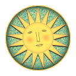

Тест №27
Зад.1. Какъв е цветът на Нашата звезда?
а) син;
б) червен;
в) оранжев;
г) жълт.
Огромно огнено кълбо от нажежени газове (водород и хелий). Това състояние се нарича плазма. Радиусът на Слънцето е 109 пъти по-голям от радиуса на Земята.
Ядрото на Слънцето има температура 16 000 000 K и в него протича ядрен синтез, при който водородни ядра се сливат, превръщат се в хелиеви и се освобождава енергия.
Над ядрото се намира ФОТОСФЕРАТА (видимата повърхност на Слънцето с температура 5 500°C = 5773 K). Над фотосферата е слънчевата корона и тя се разпростира на милиони километри.
Според размера: Свръхгиганти, гиганти, джуджета
Според цвета (температурата): Сини, синкавобели, бели, жълтобели, жълти, оранжеви и червени.
Най-горещи са сините (50 000 К), а най-студени - червените (3000К)
Видими за човешкото око са звездите с температура от 3 000 К до 25 000 К


Зад.1. Какъв е цветът на Нашата звезда?
Зад.2. Кои небесни тела наричаме звезди?
Зад.3. Какъв е източникът на енергия в Слънцето и звездите?
Зад.4. Какво представлява светлинната година?
Зад.5. Какво се нарича фотосфера?
Зад.6. Плътността на веществото в ядрото на Слънцето е 150 kg/cm³. Ако се напълни съд с вместимост един литър, колко ще тежи?
Зад.7. Когато Слънцето се превърне в бяло джудже (това е етап от еволюцията на звездата) неговата плътност ще бъде 1000 kg/cm³. Колко би тежал съд с вместимост един литър, ако е напълнен с това вещество?